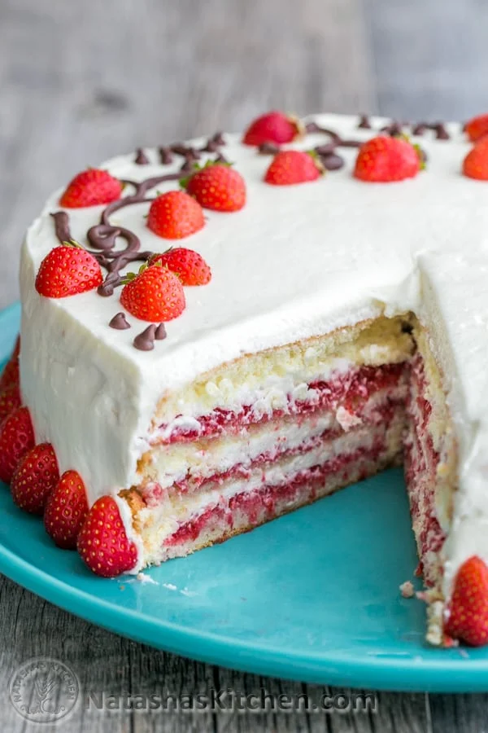

Strawberry Cake

This Strawberry Sponge Cake Recipe is among our all-time favorite strawberry desserts. It is moist with layers of fresh strawberries, and whipped cream cheese frosting.
3 cupsheavy whipping cream8 ozcream cheese, softened at room temperature¾ cupgranulated sugar1½ lbfresh strawberries, 1 lb to blend and ½ lb for decor
For cake layers please see Sponge Cake recipe.
Cut strawberries into quarters if large and place them in the bowl of a food processor; pulse until consistency of chunky applesauce; set aside.
Beat cold heavy whipping cream on high speed with whisk attachment for 1-2 min until stiff and spreadable then remove to a separate dish.
In the same mixing bowl (no need to wash it), beat together cream cheese and ¾ cup sugar about 2 min until smooth and lump-free, scraping down a bowl a couple times. Using a spatula, fold in whipped cream.
Place the first layer cut-side-up on your serving dish and spread with ⅓ of the strawberry puree. Some good strawberry marmelade can also be added for extra taste.
Spread about ½ cup frosting on the second cake layer and place it over the first layer so the strawberries and cream are hugging. Repeat with the next layers.
Frost the top and sides with remaining frosting. Decorate the top with melted chocolate. I cut the little strawberries in half and placed them on each of the chocolate “vines.” Then I put strawberries halves around the base of the cake. If you can’t find small strawberries; raspberries would work well for the decor also as they are tiny and look cute cut in half.